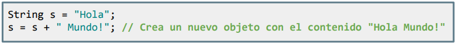
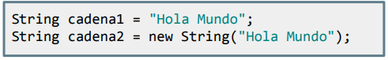
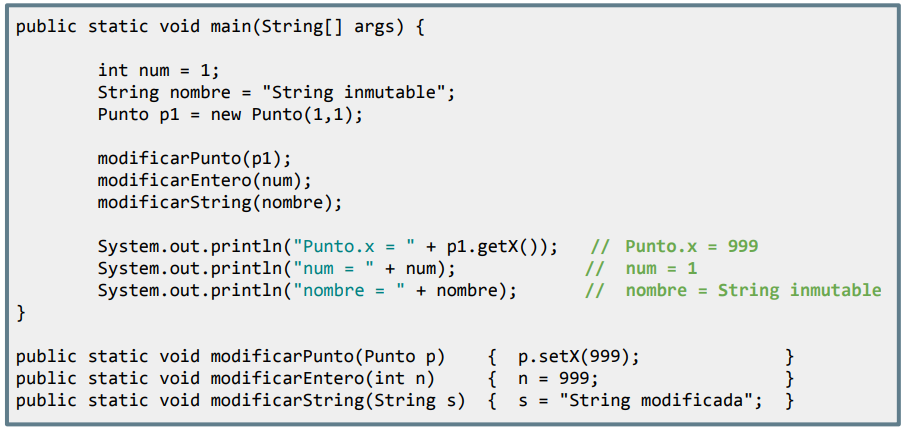

Como has podido observar al modificar la clase Libro, hemos necesitado pasar como parámetro a un objeto de tipo Estudiante para poder prestar y devolver libros mediante la relación de bidireccionalidad. Pero, ¿te has dado cuenta de lo que realmente hemos hecho?
Igual que nos pasaba con los arrays, cuando pasamos un Objeto por parámetro NO estamos realizando una copia, sino que se pasa por referencia (dirección de memoria): es decir, que voy a afectar directamente al objeto y no a una copia.
En nuestro caso, hemos modificado el objeto de tipo Estudiante original para "setear" su atributo relacionado con el Libro:
public void prestar(Estudiante estudiante){
if(disponible && estudiante.getLibroPrestado() == null) {
disponible = false;
System.out.println("El libro " + getTitulo() + " ha sido prestado con éxito " + " a " + estudiante.getNombre() + ".");
librosDisponibles--;
estudiantePrestado = estudiante;
estudiante.setLibroPrestado(this); // MODIFICAMOS EL OBJETO ORIGINAL QUE HA ENTRADO POR PARÁMETRO
} else if (estudiante.getLibroPrestado() != null) {
System.out.println("El estudiante " + estudiante.getNombre() + " ya tiene un libro prestado.");
}else{
System.out.println("El libro " + getTitulo() + " no se puede prestar (no disponible).");
}
}Por lo tanto:
- En Java, los tipos primitivos (int, char, boolean,...) siempre se pasan por valor a los métodos.
- Los objetos y arrays siempre se pasan por referencia a los métodos.
Clases inmutables
Por otra parte, existen casos especiales como los Strings, ya que estos siguen siendo objetos, pero de tipo inmutables. Es decir, una vez se ha creado una String, no se pueden modificar ninguno de sus caracteres sin crear una nueva instancia. Cualquier operación que se realice en un objeto String, como concatenar, cambiar mayúsculas o minúsculas, etc, genera un nuevo objeto String con los cambios realizados.

En Java existen dos formas de crear un objeto de la clase String: mediante una asignación literal, y mediante el uso del constructor new String():

La principal diferencia entre estas dos formas es que, cuando se crea una String mediante una asignación literal, la JVM busca en su pool de Strings si existe una String igual y, si existe, retorna su dirección en memoria. Si no existe, la JVM crea una nueva String en el
pool de Strings y retorna su dirección en memoria.
En cambio, cuando se crea una String mediante el constructor new String(), se crea un nuevo objeto String en la memoria, independientemente de si existe o no una String igual en el pool de Strings. Por lo tanto, es recomendable utilizar asignaciones literales para crear Strings porque son más eficientes, ya que evitan la creación de objetos innecesarios.
